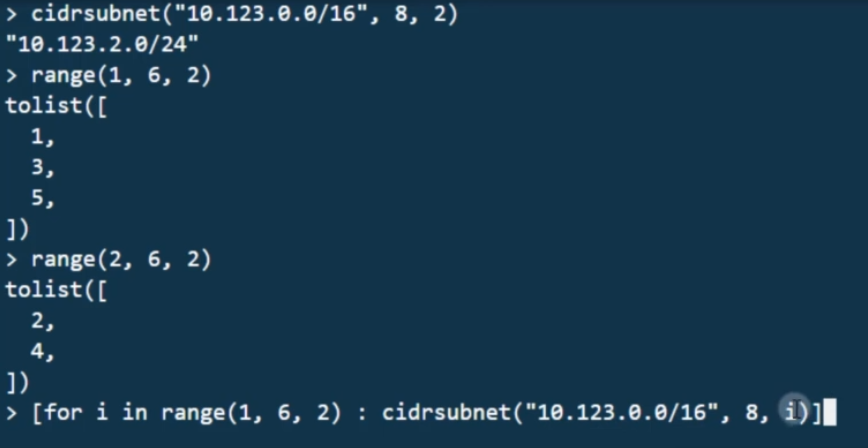

Terraform Core
Terraform Core is a statically-compiled binary written in the Go programming language. The compiled binary is the command line tool (CLI) terraform, the entrypoint for anyone using Terraform. The code is open source and hosted at github.com/hashicorp/terraform.
The primary responsibilities of Terraform Core are:- Infrastructure as code: reading and interpolating configuration files and modules
- Resource state management
- Construction of the Resource Graph
- Plan execution
- Communication with plugins over RPC
Terraform Plugins
Terraform Plugins are written in Go and are executable binaries invoked by Terraform Core over RPC. Each plugin exposes an implementation for a specific service, such as AWS, or provisioner, such as bash. All Providers and Provisioners used in Terraform configurations are plugins. They are executed as a separate process and communicate with the main Terraform binary over an RPC interface. Terraform has several Provisioners built-in, while Providers are discovered dynamically as needed (See Discovery below). Terraform Core provides a high-level framework that abstracts away the details of plugin discovery and RPC communication so developers do not need to manage either.
Providers aliases


Notice that instead of installing the latest version of the AWS provider that conforms with the configured version constraints, Terraform installed the version specified in the lock file. While initializing your workspace, Terraform read the dependency lock file and downloaded the specified versions of the AWS and random providers.
If Terraform did not find a lock file, it would download the latest versions of the providers that fulfill the version constraints you defined in the required_providers block
By default, Terraform will attempt to download the provider version specified by the lock file (.terraform.lock.hcl). If the lock file does not exist, Terraform will use the required_providers block to determine the provider version. If neither exists, Terraform will download the latest provider version.